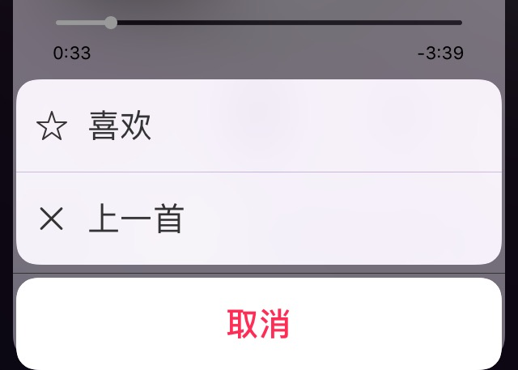
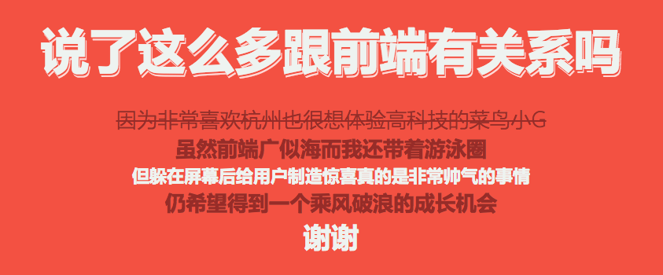
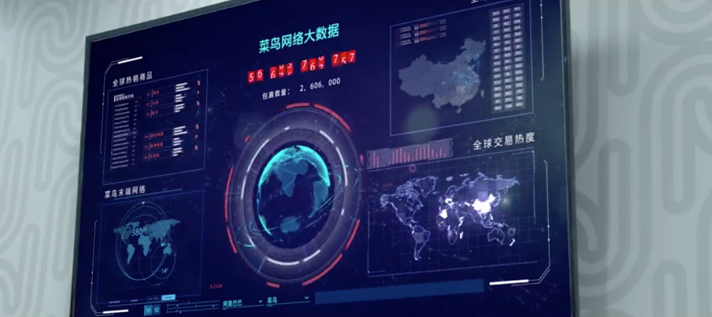

满脑太多主意
为什么报考信息安全？
高一因为一部iPad2开始沉迷于探索有趣的App
又不甘永远做产品的享用者
所以在志愿书上填下了计算机学院
用户体验 =
UI
交互
前端优化
正中靶心的需求
我看前端
前端是负责和用户打交道，赋予设计图生命、和后端合作完成产品任务的魔法师✧(≖ ◡ ≖✿)
一些观察
网易云音乐的iPhone菜单控件
用户想要播放上一首时必须经过两次点击，而多余的“喜欢”功能：用户被音乐打动时往往会打开App看评论或收听更多相似歌曲，而不是繁琐地戳下菜单上的“喜欢”。且菜单控件里“喜欢”功能对应的是星星图标，反馈效果远远不如App界面里动态、有积极反馈的红心❤️收藏图标。 

一个想法
线上自习室x淘宝教育
互联网+时间管理+学习型社交
为什么时间管理App层出不穷
能留住用户的却不多
上一次真正充满干劲
是因为父母为你报了一个辅导班？
还是确切知道自己离目标还有多远？
高三那年有没有想过
如果梦想可以量化成详细的计划
如果可以时刻知道对手正在马不停蹄地学习
结局会不会更好
当看见一片绿色的GitHub
会不会突然热血一番
为什么MOOC上真正能完成课程的寥寥无几？
为什么朋友圈晒娱乐晒成就的多
晒学习晒艰辛的少？
知识源于教室
更源于课下长时间自习的消化吸收
和志同道合的陌生人一起
奔向目标
“与淘宝教育何干？”
淘宝教育: 一个统合线上线下教育资源的平台
教育类与时间管理类产品主力人群都是80后-00后
将广告融入学习者的日常
“知识改变命运”
“前提是命运不能差到根本接触不到知识”
如果淘宝可以走进农村
教育可不可以
我身边的物流
从初二开始加入剁手族的我一直有一个梦想
希望全世界的快递单都不用自己处理
试过马克笔 花露水 美工刀 隐私涂改带
等了八年 终于等到菜鸟新型隐私快递单！
从前为20多个双十一包裹焦虑一个月
到去年“嗯怎么一个星期就收完了呢”
从目睹快递小哥汗流浃背地输入手机号发短信
到快递即签即走
从被不环保的快递袋弄脏白衬衫
到看到商家定制、环保干净的快递箱那一刻的惊喜
到坐在宿舍等快递上门↓
我看菜鸟
统合物流资源，数据驱动的物流网络
从极高的物流效率，到最后一公里的用户细节
淘宝为天，菜鸟为地
让懒人实现一屋一世界的梦想
告别取快递的四处奔走
百花齐放 更多的商机
社会智能化
给商家 快递员 用户以时间做更有价值的事情
真·改变世界

